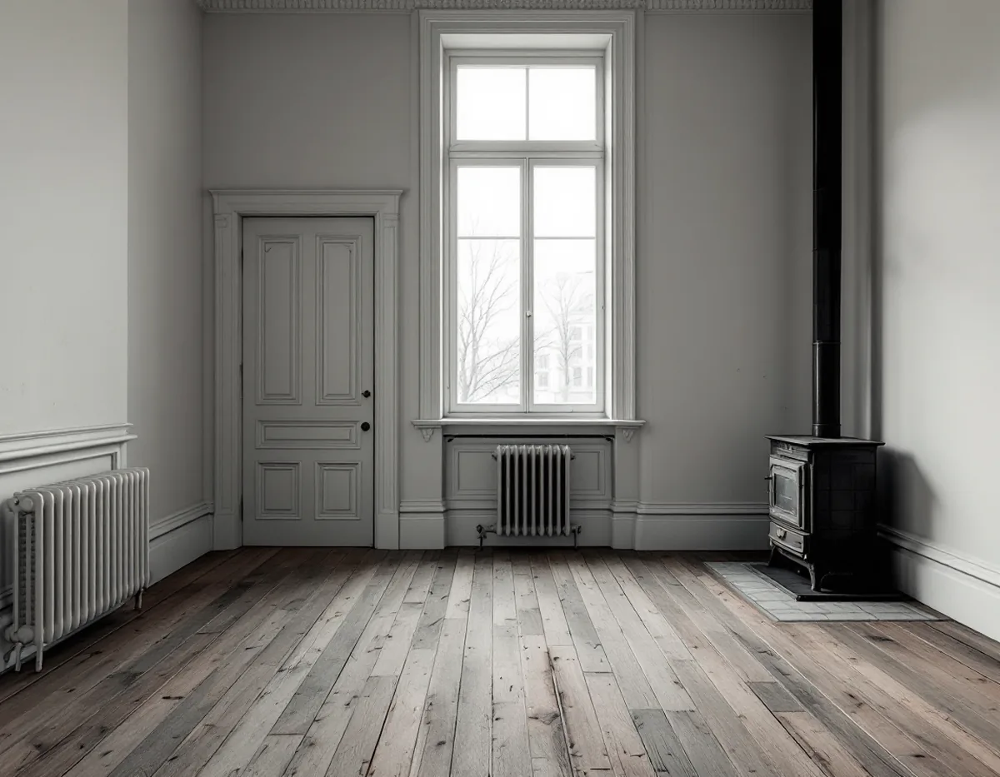
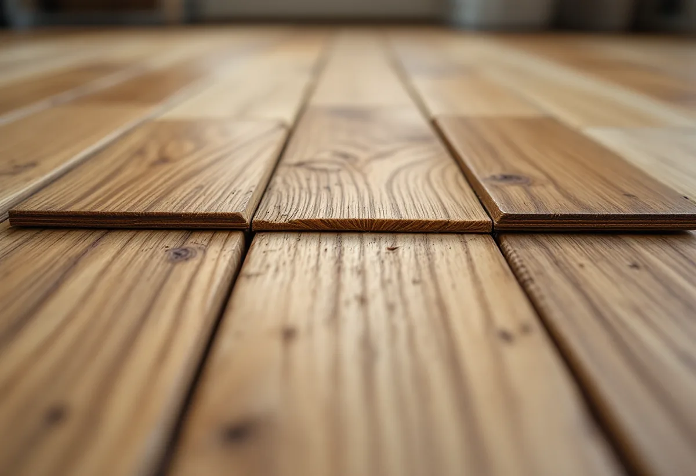

Platsbesök
Vi tittar på springor, knarr och slitskiktet och frågar hur golvet har skötts.
Ett trägolv i en lägenhet i stenstaden lever med årstiderna. På vintern kan springorna växa, på sommaren kan brädorna resa sig i kanterna. Det mesta av det är normalt, men en del är tecken på att golvet behöver åtgärdas. Geal Entreprenad AB slipar, behandlar och lägger golv i Vasastan, och här går vi igenom vad som är vad.

I stadens underlag om riksintressen räknas Norrmalm, där Vasastan ligger, till den klassiska stenstaden. Där beskrivs täta kvarter från 1870 till 1930, med hyreshus som normalt är fem våningar höga vid 18 meter breda gator. Bland de förändringar som staden nämner att bebyggelsen kan utvecklas genom finns inre modernisering, prövad enligt varsamhetskraven i plan- och bygglagen.
I Västra Matteus finns enligt områdesfakta för 2025 11 913 bostäder i flerbostadshus och inga småhus. Tvåorna är flest med 4 269 lägenheter. För de flesta här handlar ett golvarbete alltså om en lägenhet i ett äldre stenhus, ofta i en bostadsrätt.

Golvbranschen förklarar att trägolv krymper när luften inomhus är torr och sväller när den är fuktig. Under vintern kan det synas som springor mellan brädorna och att brädorna skålar sig. Under sommaren kan golvet i stället kupa sig. Trägolv trivs bäst när luftens relativa fuktighet ligger mellan 30 och 60 procent, och branschen rekommenderar en rumstemperatur på ungefär 15 till 25 °C.
Golvbranschen råder att hålla temperatur och fuktighet så jämna som möjligt med rätt uppvärmning och god ventilation. Ett massivt golv rör sig normalt mer än ett lamellparkettgolv, där skikten ligger med fiberriktningen vinkelrätt mot varandra för att minska rörelserna. Ligger golvet flytande måste det ha utrymme att röra sig, och Golvbranschen nämner för liten rörelsefog mot väggar eller fast inredning som en orsak till knarr.
I en lamellparkett kan det översta skiktet, slitskiktet, släppa från skikten under. Golvbranschen kallar det stavsläpp. Oftast gäller det några få stavar som kan limmas tillbaka. Branschen skriver att golvets ålder sannolikt bidrar, eftersom limfogen blir spröd med åren, och att stora fuktrörelser från varierande inomhusklimat eller för våta städmetoder kan spela in.
Stavsläpp kan också uppstå efter en slipning, eftersom vibrationerna fortplantas ner i brädan. Det går enligt Golvbranschen inte att förutse, och därför informerar vi om risken innan en lamellparkett slipas, så som branschen anger att entreprenören ska göra. Lösa stavar limmas ner före slipningen.
Golvbranschens riktlinjer för underhåll säger att torra städmetoder ska användas så långt det går, och att det lönar sig att stoppa smutsen vid entrén med en ordentlig avtorkningsmatta både utanför och innanför dörren. Sandkorn som följer med skorna in repar golvet. I en bostad är det enligt riktlinjerna mest effektivt att lämna ytterskorna i hallen och sätta möbeltassar under alla möbler. Ett naturoljat golv tvättas med en återfettande golvsåpa, som har en fetthalt på 20–30 procent och inte ska förväxlas med vanlig grönsåpa. Ett lackat golv kan efter en tids bruk fräschas upp med en så kallad refresher enligt tillverkarens rekommendation.
Riktlinjerna skiljer på tre nivåer för ett lackat golv. Mikrorepor tas med underhållslack, som moppas på med ungefär en liter till 50–80 kvadratmeter. Vid större repor och skadad lackyta görs en överlackering, och då ska ett vidhäftningsprov göras först. Är trät blottat eller vattenskadat krävs en renovering. Har golvet någon gång behandlats med vax eller polish måste det gamla lackskiktet slipas bort helt innan ny lack läggs på. Ett oljat golv kan i stället punktbättras, och gångstråk oljas oftare än resten av ytan.
När ytan är nött ner till träet räcker inte underhållet, och då slipar vi. Ska badrummet byggas om samtidigt finns mer under badrumsrenovering i Vasastan, och golvtyperna jämförs på sidan om golvläggning.
Vi tittar på springor, knarr och slitskiktet och frågar hur golvet har skötts.
Du får veta om golvet behöver underhåll, lagning, slipning eller bytas.
Lagning av stavar, slipning och ytbehandling redovisas som egna poster.
Lösa stavar limmas och spikar och lister tas bort.
Golvet slipas i flera steg och får lack eller olja.
Du får råd om klimat och städning, så att golvet håller länge.
Skatteverket godkänner rotavdrag för att slipa och byta golv i en bostadsrätt. I en bostadsrätt gäller avdraget arbete inne i bostaden, alltså innanför väggar, tak och golv, och du ska ha underhållsansvaret för det enligt föreningens stadgar. Arbete i trapphus, entréer och andra gemensamma ytor ger inget avdrag.
Avdraget är 30 procent av arbetskostnaden, högst 50 000 kr per person och år och högst 75 000 kr tillsammans med rutavdrag. Material och resor ger inget avdrag. Geal drar avdraget direkt på fakturan.
Golvets skick, hur många stavar som behöver limmas och vilken ytbehandling du väljer väger tyngst. Efter ett gratis platsbesök får du ett skriftligt kostnadsförslag.
Parkett, trägolv, klinker och slipning.
Golvläggning i Stockholm →Takbyte, takbesiktning och plåtarbeten.
Takläggare i Vasastan →Stenstad, Röda Bergen och föreningarnas tak.
Takrenovering i Vasastan →Flytta badrummet, ny stam och frånluft.
Badrumsrenovering i Vasastan →När en lokal blir bostad.
Byggföretag i Vasastan →Fasadmålning för föreningar.
Fasadmålning i Vasastan →Ställning, tillstånd och etablering på gatan.
Fasadrenovering i Vasastan →Storgårdskvarteren och 20-talets fönster.
Fönsterbyte i Vasastan →Fönster i Birkastadens jugendhus.
Fönsterrenovering i Vasastan →Stav- och fiskbensparkett.
Golvslipning i Vasastan →Kokvrån som blir kök.
Köksrenovering i Vasastan →Snickerier, fönster och sprucket spackel.
Målare i Vasastan →Takfönster, vindar och plåt.
Plåtslagare i Vasastan →Öppna upp, nya dörröppningar och listverk.
Snickare i Vasastan →Takbyte för föreningar och fastighetsägare.
Takbyte i Vasastan →Ny tapet på gamla putsväggar.
Tapetsering i Vasastan →Hela lägenheten, med husets värden kvar.
Totalrenovering i Vasastan →